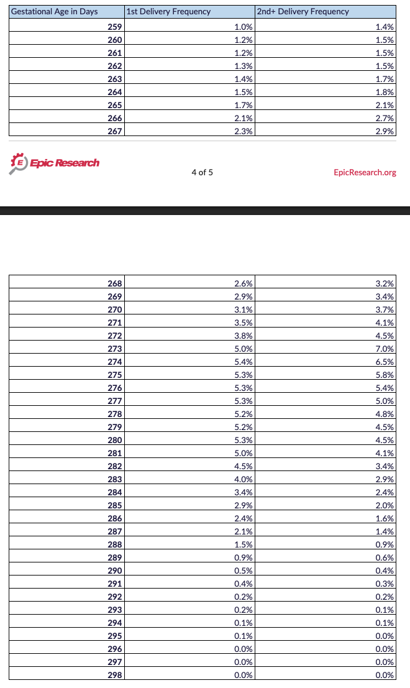

Interactive curve
Daily chance and cumulative probability
Hover or tap a day to see the date and the chance baby arrives on or before then.
Calendar table
Chance baby arrives by each date
Percentages are cumulative from the rounded daily frequencies visible in the source image.
| Date | Gestational age | First baby: chance by date | Second or later: chance by date |
|---|
Source
Data Confirms Firstborns Take Their Time, Younger Siblings Born Sooner
This tool maps the Epic Research gestational-age frequency table onto your selected due date. The study looked at more than 2 million live, full-term, single-birth pregnancies from 37 to 43 weeks, excluding inductions and C-sections.
For curiosity and planning context only. It is not medical guidance, and the cumulative values are calculated from rounded table values.
View source table image
